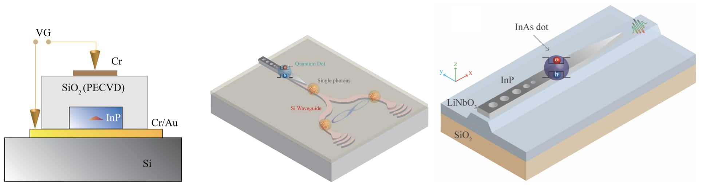
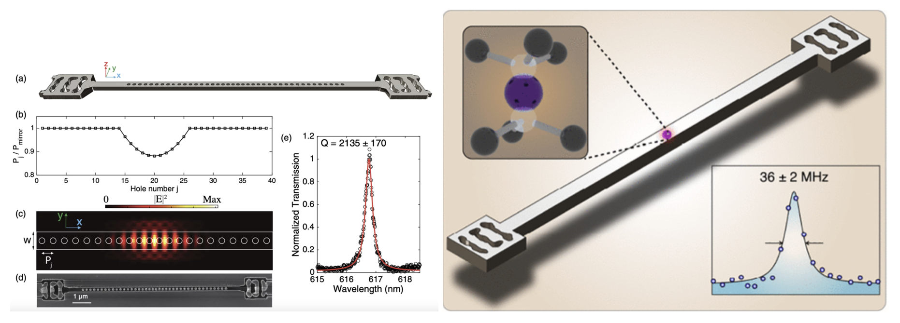
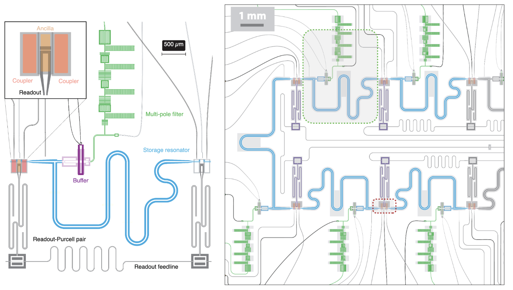

About Me
I am Shahriar Aghaei (also use Shahriar Aghaeimeibodi), a research science manager at Amazon Web Services' Center for Quantum Computing. As the manager of design delivery team, I guide superconducting qubit and processor design projects from inception to completion.
My academic journey includes a PhD and a Master's in Electrical and Computer Engineering from the University of Maryland, with a focus on quantum optics, nanophotonics, and quantum materials. I worked under supervision of Prof. Edo Waks in Quantum Photonics Lab. During my PhD, I focused on quantum emitters based on self-assembled quantum dots and their integration with photonic integrated circuits.
After my PhD, I joined Prof. Jelena Vuckovic's group at Stanford University with a Bloch Postdoctoral Fellowship. During my postdoc, I focused on diamond color centers (SiV and SnV), their optical and spin properties, and their integration with optical waveguides and cavities. Overall, combining my academic and industry efforts, I have around a decade of experience in quantum research and development.
Research Journey
Quantum Dot Integrated Photonics
PhD · University of Maryland

Worked under Prof. Edo Waks on quantum emitters based on self-assembled quantum dots, their coupling to photonic crystal cavities and silicon photonic circuits, and the development of hybrid integration methods for on-chip quantum photonics.
Diamond Color Centers
Postdoc · Stanford University

Bloch Fellow in Prof. Jelena Vuckovic's group. Focused on tin-vacancy (SnV) and silicon-vacancy (SiV) centers in diamond — their optical and spin properties, electrical tuning, nanophotonic integration, and quantum photonic interfaces.
Superconducting Qubits
Manager · AWS Center for Quantum Computing

Leading the design delivery team for superconducting qubit and processor design at AWS. Working on transmon-based erasure qubits, bosonic qubits, hardware-efficient quantum error correction, and high-quality superconducting resonators.